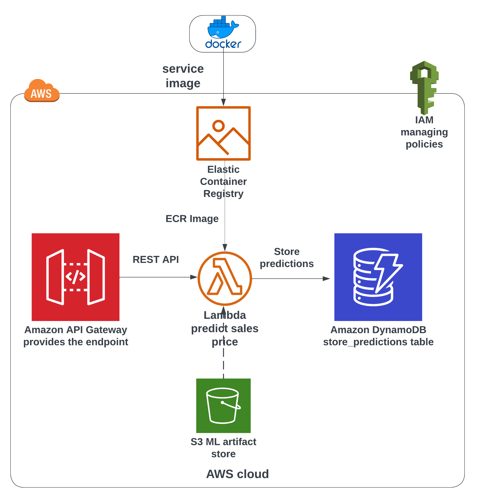
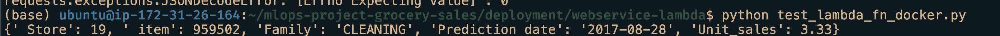
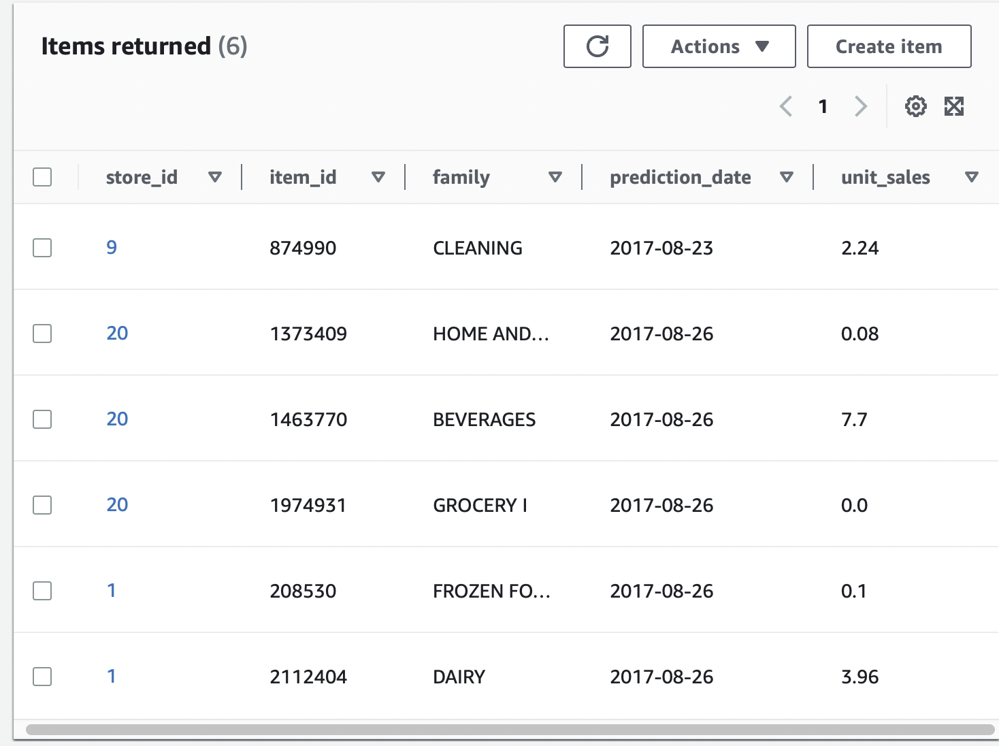

Introduction
In part 1, we saw how to make and test lambda function locally. In part 2, we will switch focus to AWS cloud provider. We will migrate our code to use AWS cloud platform.
Services used
We will use these services to form our data pipeline:
S3 - to download our predicted sales price table.
ECR - to upload our docker image with installed dependencies.
AWS Lambda - to make the business logic of the web application. It will use ECR image as source. Sends predicted outputs to DynamoDB.
API Gateway - Rest API to invoke AWS Lambda function.
DynamoDB - to store the predicted sales prices. Invoked from Lambda.
Data Pipeline

Lambda function to predict sales
To build this pipeline we will start with our lambda_function using MLflow to download ML trained artifact from S3 bucket to predict sales prices. We will first check if it is possible to connect to S3 and then move forward to complete cloud solution.
lambda_function.py
import os
import mlflow
import pandas as pd
RUN_ID = os.getenv("RUN_ID") # "5651db4644334361b10296c51ba3af3e"
S3_BUCKET_NAME = os.getenv(
"S3_BUCKET_NAME"
) # "mlops-project-sales-forecast-bucket"
EXPERIMENT_ID = 1
FILE_ADDRESS = "artifacts/predictions/lgb_preds.parquet"
pred_s3_location = (
f"s3://{S3_BUCKET_NAME}/{EXPERIMENT_ID}/{RUN_ID}/{FILE_ADDRESS}"
)
def read_parquet_files(filename: str):
"""
Read parquet file format for given filename and returns the contents
"""
df = pd.read_parquet(filename, engine="pyarrow")
return df
if os.path.exists("lgb_preds.parquet"):
df_test_preds = read_parquet_files("lgb_preds.parquet")
else:
s3_file = mlflow.artifacts.download_artifacts(
artifact_uri=pred_s3_location, dst_path="/tmp"
) # /tmp is added as lambda gives write access only to that folder. Otherwise use "./" .
df_test_preds = read_parquet_files(s3_file)
df_items = read_parquet_files("items.parquet")
def predict(find, item_idx: int):
"""
Takes the json inputs, processes it and outputs the unit sales
"""
try:
idx = pd.IndexSlice
# df_items.sample(1).index[0]
x = df_test_preds.loc[idx[find["store_nbr"], item_idx, find["date1"]]][
"unit_sales"
]
except KeyError:
print("This item is not present this store. Try some other item")
return -0.0
else:
return float(round(x, 2))
def lambda_handler(event, context=None) -> dict:
"""
lambda handler for predict method
"""
find = event["find"]
item = df_items.sample(1)
item_idx, item_family = item.index[0], item["family"].values[0]
pred_unit_sales = predict(find, item_idx)
result = {
" Store": find["store_nbr"],
" item": int(item_idx),
"Family": item_family,
"Prediction date": find["date1"],
"Unit_sales": pred_unit_sales,
}
return resultBuilding container image
Building the docker image is same as previous post.
Terminal 1
docker build -t lambda-app:v1 .Using sensitive/secret access keys.
Since we are using MLflow’s download artifact functionality directly from the S3, we need to supply our AWS access key to the docker as environment variables. Care needs to be taken when supplying sensitive information. Most hard code these secrets in their code. This is a bad practice as it will make its way to the code repository eventually. Next possible option is to supply as environment variable in the terminal. However, a simple history command will reveal the secrets. So, to avoid that we can set HIST_IGNORE_SPACE and also add keywords to HISTIGNORE ensuring any command with a leading space in front of it will not be stored in history cache.
Terminal 1
set +o history
export HISTIGNORE= \
"ls*:cat*:*AWS*:*SECRET*:*KEY*:*PASS*:*TOKEN*"
export AWS_ACCESS_KEY_ID=xxxx
export AWS_SECRET_ACCESS_KEY=xxxtt- 1
- Disables history for the current terminal session.
- 2
- History doesn’t store any command that has leading space. Highly useful for sensitive environment variables.
Running the container and testing locally
Unlike last time to run the docker image as container requires a few arguments. We give them to docker as -e environment variables. Setting environment variables in the terminal is not going to pass over to the docker container. So we need to explicitly supply AWS_ACCESS_KEY_ID, AWS_SECRET_ACCESS_KEY, RUN_ID and S3_BUCKET_NAME while executing docker run command in addition to the regular arguments.
Terminal 1
docker run \
-it --rm \
-p 9000:8080 \
-e AWS_ACCESS_KEY_ID=${AWS_ACCESS_KEY_ID} \
-e AWS_SECRET_ACCESS_KEY=${AWS_SECRET_ACCESS_KEY} \
-e RUN_ID=5651db4644334361b10296c51ba3af3e \
-e S3_BUCKET_NAME=mlops-project-sales-forecast-bucket \
lambda-app:v1To test run the command in terminal 2,
test_docker_fn_docker.py in Terminal 2
python test_docker_fn_docker.pyWe will get a prediction as we have done in the previous post. 
AWS Cloud
Next step would be to migrate our lambda function to AWS cloud as per Figure 1. However, our lambda function has library dependencies. It is possible to install all the dependencies, zip with the function and upload to AWS Lambda. But that might led to errors. To avoid that, AWS Lambda provides an option to use container image as source. All we need to do is upload our container image to a container registry. This registry is called ECR(elastic container registry).
Uploading container image to ECR
For this section we need awscli package. If don’t have I recommend installing it. sudo apt install awscli. AWS-CLI allows for swifter creation of resources without overly relying on the console.
We need our ACCOUNT_ID. It can be found in the AWS console.
Terminal
docker build -t lambda-app:v1 .
export ACCOUNT_ID=xxxx
aws ecr create-repository --repository-name lambda-images
docker tag lambda-app:v1 ${ACCOUNT_ID}.dkr.ecr.us-east-1.amazonaws.com/lambda-images:app
$(aws ecr get-login --no-include-email)
docker push ${ACCOUNT_ID}.dkr.ecr.us-east-1.amazonaws.com/lambda-images:app- 1
- Optional as we already built the image.
- 2
- Replace with your account ID.
- 3
- Remember we supplied aws access key and secret before. The session borrows them for ECR login. If it is a new session, those variables have to be given again.

 In the screenshots we can see that our container image is uploaded to the registry.
In the screenshots we can see that our container image is uploaded to the registry.
Setup AWS Lambda function
This part is a bit tedious as it is not as straight forward as running commands. I’d like to point out to a detailed guide which has all the steps to create a AWS Lambda function, attach policies, configure and supply environment variable. I urge you to visit that link. Including them here will make it too long, full of screenshots and frankly boring.
Testing the Lambda function
In the Test tab, create a test event with our good old sample JSON object. {"find":{"date1":"2017-08-26","store_nbr":20}}. 
 Hitting the Test button should give us a prediction. as seen in the second image.
Hitting the Test button should give us a prediction. as seen in the second image.
So our function is able to access S3 artifact bucket to download and give out predictions. Meaning our attached policies are correct. Testing once in the console is fine but the customer wouldn’t want to do that. We need something that triggers the lambda function - we need an API Gateway.
AWS API Gateway
A front-end developer, for example, can create a button that calls on the Lambda function. From customer’s viewpoint it is as simple as a click of a button. For us though, it is much more than that.
Create Rest API, test and deploy it
Again I advise you to refer my other guide to create an endpoint. This endpoint is same as the Flask one we encountered in the last posts.
Upon deploying we get an invoke url. This url is without an endpoint. 
We need to append predict-sales, our resource endpoint, to the url. The final url would look like https://eecweeeeeg.execute-api.us-east-1.amazonaws.com/stg-lambda-app-for-blog/predict-sales
Use the following JSON object to test it out in an API platform client such as Thunder Client in VSCode, Postman etc.
{"find": {"date1": "2017-08-26", "store_nbr": 20}}
AWS DynamoDB
We want to store these predicted outputs to a DB. With the help of console, create a table sales_predictions. Give store_id as partition_key and item_id as sort_key. Rest of the setting can be default.
Then add policy that give Lambda permission to write objects into DB. Refer my other notes
Modify AWS Lambda
lambda_function.py
import os
import mlflow
import pandas as pd
import boto3
import json
RUN_ID = os.getenv("RUN_ID") # "5651db4644334361b10296c51ba3af3e"
S3_BUCKET_NAME = os.getenv(
"S3_BUCKET_NAME"
) # "mlops-project-sales-forecast-bucket"
EXPERIMENT_ID = 1
FILE_ADDRESS = "artifacts/predictions/lgb_preds.parquet"
pred_s3_location = (
f"s3://{S3_BUCKET_NAME}/{EXPERIMENT_ID}/{RUN_ID}/{FILE_ADDRESS}"
)
# Initialize the SNS client object outside of the handler
dynamodb = boto3.resource('dynamodb')
def read_parquet_files(filename: str):
"""
Read parquet file format for given filename and returns the contents
"""
df = pd.read_parquet(filename, engine="pyarrow")
return df
if os.path.exists("lgb_preds.parquet"):
df_test_preds = read_parquet_files("lgb_preds.parquet")
else:
s3_file = mlflow.artifacts.download_artifacts(
artifact_uri=pred_s3_location, dst_path="/tmp"
) # /tmp is added as lambda gives write access only to that folder. Otherwise use "./" .
df_test_preds = read_parquet_files(s3_file)
df_items = read_parquet_files("items.parquet")
def predict(find, item_idx: int):
"""
Takes the json inputs, processes it and outputs the unit sales
"""
try:
idx = pd.IndexSlice
# df_items.sample(1).index[0]
x = df_test_preds.loc[idx[find["store_nbr"], item_idx, find["date1"]]][
"unit_sales"
]
except KeyError:
print("This item is not present this store. Try some other item")
return -0.0
else:
return float(round(x, 2))
def lambda_handler(event, context=None) -> dict:
"""
lambda handler for predict method
"""
find = event["find"]
item = df_items.sample(1)
item_idx, item_family = item.index[0], item["family"].values[0]
pred_unit_sales = predict(find, item_idx)
result = {
"store_id": find["store_nbr"],
"item_id": int(item_idx),
"family": item_family,
"prediction_date": find["date1"],
"unit_sales": str(pred_unit_sales),
}
table = dynamodb.Table("sales_preds_for_blog")
table.put_item(
Item = result
)
return {
'statusCode': 200,
'body': 'successfully created item!',
}- 1
-
Create
dynamodbresource - 2
-
Access already created table
sales_preds_for_blog - 3
- Insert item into the table
Rebuild the docker image, retag it, publish it to the ECR repo. Then in AWS Lambda, use deploy new image to select the latest build. Test with sample input. 
Conclusion
Thus we have successfully migrated our local codebase into AWS Cloud. AWS Free tier allows more than enough free requests for our task. We learned how to add resources, policies and manage albeit a tedious to do individually. In the next part, we will see how to manage these infrastructures through Terraform.